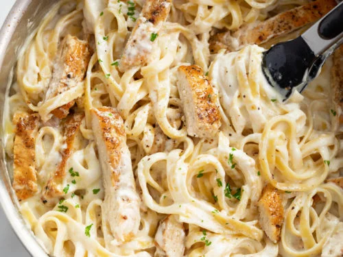

<html>
    <head>

    </head>
    <body>

    </body>
</html>

<p>Since you did so well with the regular alfredo, adding chicken to it can be a good way of spicing up our original recipe.</p>

</p>

For this specific recipe, we will be utilizes chicken breast.I would highly recommend allowing time for your chicken to marinate. However, it is <strong>not</strong> required!

<ul><!--unordered list-->
</p>
<h2><strong>Ingredients</strong></h2>

<li>½ tsp dried parsley</li>
<li>½ tsp kosher salt</li>
<li>½ tsp garlic powder</li>
<li>¼ tsp onion powder</li>
<li>⅛ tsp black pepper</li>
<li>⅛ tsp smoked paprika</li>
</ul>

</p>
<h2><strong>Prep Instructions</strong></h2>

<ol>
<li>Place your chicken breast and list of seasonings in a large mixing bowl. </li>
<li>Mix all of your ingredients together.</li>
<li>Allow the chicken to marinate for about 30 mins (optional, but <strong>highly</strong> recommended).</li>
<li>Poor some olive oil in a pan and get to grilling!</li> 
<li>Add your sauce to the chicken a mix!</li>
<li>Lastly, add everything together with the pasta and you are ready to go!</li> 
</ol>

<p>Haha! Wow! Look at you! Definitely stepped it up! Gordan Ramsey who? You should definitely bring some of this in for work! Just don't give any to Shela, you know how she is, ugh.</p>
<p>Enjoy!</p>


<a href="index.html">Go Back to Home.</a>

